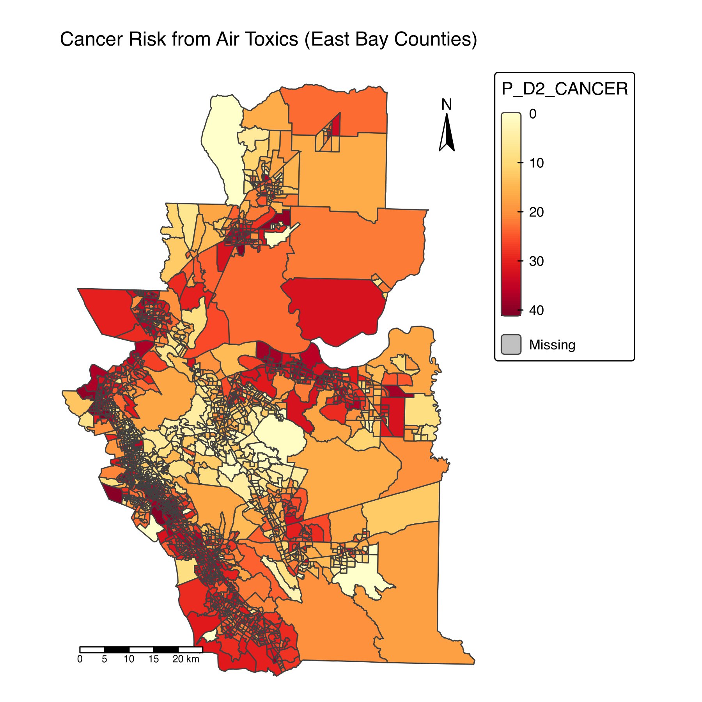
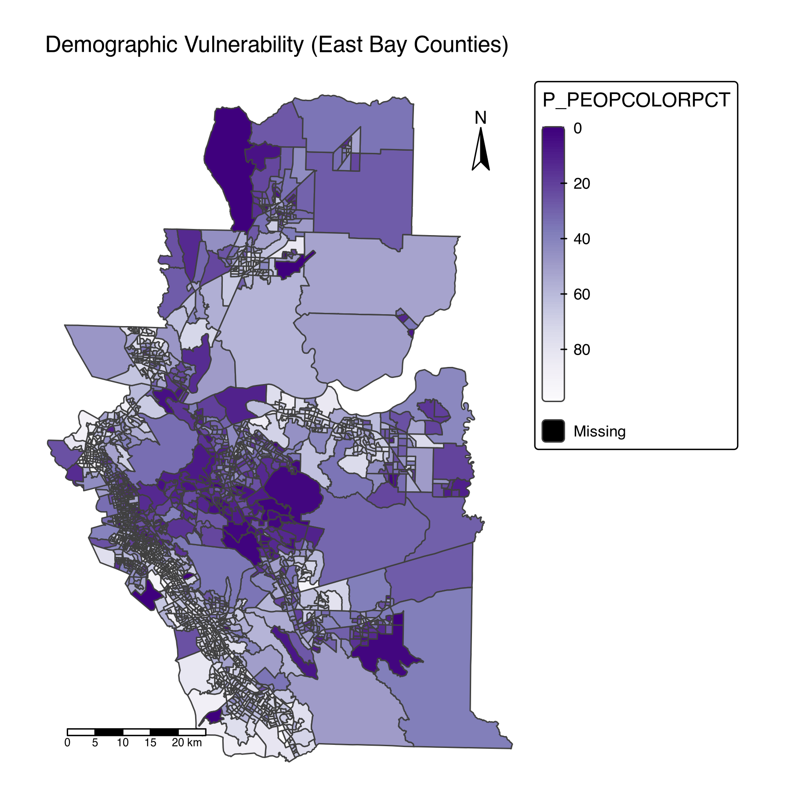
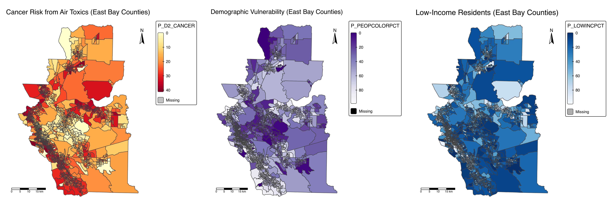

# Load in all the Necessary Packages for upcoming tasks
pacman::p_load(tidyverse, sf, stars, tmap, here, viridisLite)Homework Assignment 1
Cancer Risk in California’s East Bay
Have you ever been to the Bay Area? San Francisco? San Jose? These are much more popular destinations. I would like to discuss a part of the Bay Area that is not as glamorous and somewhat removed from the tech bubble.
This project will use maps to illustrate the following:
- Retrieve and load the data, subset the data, and save the data to minimize the time spent on the rendering process
- Plot and render a map that shows the East Bay, which consists of Alameda, Contra Costa, and Solano Counties
- Understand the plots as we examine them together
- We will explore the lifetime health risks associated with air quality, demographics (including people of color), and socioeconomic levels.
# Read in EJScreen data
ejscreen <- sf::st_read(here::here("data",
"ejscreen",
"EJSCREEN_2023_BG_StatePct_with_AS_CNMI_GU_VI.gdb"))Reading layer `EJSCREEN_StatePctiles_with_AS_CNMI_GU_VI' from data source
`/Users/wonyoungkim/MEDS/EDS-223/EDS223-HW1/data/ejscreen/EJSCREEN_2023_BG_StatePct_with_AS_CNMI_GU_VI.gdb'
using driver `OpenFileGDB'
Simple feature collection with 243021 features and 223 fields
Geometry type: MULTIPOLYGON
Dimension: XY
Bounding box: xmin: -19951910 ymin: -1617130 xmax: 16259830 ymax: 11554350
Projected CRS: WGS 84 / Pseudo-Mercator# Filter to California
california <- ejscreen %>%
dplyr::filter(ST_ABBREV == "CA")
# Filter to a counties in Bay Area (East Bay)
east_bay_ejscreen <- ejscreen %>%
dplyr::filter(CNTY_NAME %in% c("Alameda County",
"Solano County",
"Contra Costa County"))
# Save the subset as a new `gpkg` file
st_write(california, here("data", "ejscreen", "california.gpkg"), delete_dsn = TRUE)Deleting source `/Users/wonyoungkim/MEDS/EDS-223/EDS223-HW1/data/ejscreen/california.gpkg' using driver `GPKG'
Writing layer `california' to data source
`/Users/wonyoungkim/MEDS/EDS-223/EDS223-HW1/data/ejscreen/california.gpkg' using driver `GPKG'
Writing 25607 features with 223 fields and geometry type Multi Polygon.st_write(east_bay_ejscreen, here("data", "ejscreen", "east_bay_ejscreen.gpkg"), delete_dsn = TRUE)Deleting source `/Users/wonyoungkim/MEDS/EDS-223/EDS223-HW1/data/ejscreen/east_bay_ejscreen.gpkg' using driver `GPKG'
Writing layer `east_bay_ejscreen' to data source
`/Users/wonyoungkim/MEDS/EDS-223/EDS223-HW1/data/ejscreen/east_bay_ejscreen.gpkg' using driver `GPKG'
Writing 2140 features with 223 fields and geometry type Multi Polygon.# Read subsetted data that's been saved as `gpkg` files
california <- st_read(here("data",
"ejscreen",
"california.gpkg")) %>%
st_transform(3857)Reading layer `california' from data source
`/Users/wonyoungkim/MEDS/EDS-223/EDS223-HW1/data/ejscreen/california.gpkg'
using driver `GPKG'
Simple feature collection with 25607 features and 223 fields
Geometry type: MULTIPOLYGON
Dimension: XY
Bounding box: xmin: -13857270 ymin: 3832931 xmax: -12705030 ymax: 5162404
Projected CRS: WGS 84 / Pseudo-Mercatoreast_bay_ejscreen <- st_read(here("data",
"ejscreen",
"east_bay_ejscreen.gpkg")) %>%
drop_na("P_D2_CANCER") %>%
st_transform(3310)Reading layer `east_bay_ejscreen' from data source
`/Users/wonyoungkim/MEDS/EDS-223/EDS223-HW1/data/ejscreen/east_bay_ejscreen.gpkg'
using driver `GPKG'
Simple feature collection with 2140 features and 223 fields
Geometry type: MULTIPOLYGON
Dimension: XY
Bounding box: xmin: -13630140 ymin: 4502606 xmax: -13521890 ymax: 4655859
Projected CRS: WGS 84 / Pseudo-Mercatorbbox_eastbay <- st_bbox(east_bay_ejscreen)
# Create static map
tmap_mode("plot")
# Plotting a spatial object
map_p_cancer <- tm_shape(east_bay_ejscreen, bbox = bbox_eastbay) +
tm_polygons(fill = "P_D2_CANCER",
fill.scale = tm_scale(values = viridis(5)),
fill.legend = tm_legend(title = "Percentile for Cancer Risk")) +
tm_layout(legend.outside = TRUE, frame = FALSE) +
tm_scalebar(position = c("left", "bottom")) +
tm_compass(type = "arrow", position = c("right", "top")) +
tm_title("Cancer Risk from Air Toxics (East Bay Counties)")
map_p_cancer
tmap_save(map_p_cancer,
filename = here("output", "map_p_cancer.png"),
width = 6,
height = 6,
units = "in",
dpi = 300)
# Create static map
tmap_mode("plot")
# Plotting a spatial object
map_p_poc <- tm_shape(east_bay_ejscreen, bbox = bbox_eastbay) +
tm_polygons(fill = "P_PEOPCOLORPCT",
fill.scale = tm_scale(values = magma(5)),
fill.legend = tm_legend(title = "Percentile for People of Color")) +
tm_layout(legend.outside = TRUE, frame = FALSE) +
tm_scalebar(position = c("left", "bottom")) +
tm_compass(type = "arrow", position = c("right", "top")) +
tm_title("Demographic Vulnerability (East Bay Counties)")
tmap_save(map_p_poc,
filename = here("output", "map_p_poc.png"),
width = 6,
height = 6,
units = "in",
dpi = 300)
# Create static map
tmap_mode("plot")
# Plotting a spatial object for Low-Income Percentage
map_low_income <- tm_shape(east_bay_ejscreen, bbox = bbox_eastbay) +
tm_polygons(fill = "P_LOWINCPCT",
fill.scale = tm_scale(values = "-inferno"),
fill.legend = tm_legend(title = "Percentile for Low-Income Population")) +
tm_layout(legend.outside = TRUE, frame = FALSE) +
tm_scalebar(position = c("left", "bottom")) +
tm_compass(type = "arrow", position = c("right", "top")) +
tm_title("Low-Income Residents (East Bay Counties)")
map_low_income
# Save map
tmap_save(map_low_income,
filename = here("output", "map_low_income.png"),
width = 6,
height = 6,
units = "in",
dpi = 300)# Arrange two maps side-by-side
three_map <- tmap_arrange(map_p_cancer,
map_p_poc,
map_low_income,
ncol = 3,
widths = c(1, 1, 1))
three_map
# Save map as PNG file
tmap_save(three_map,
filename = here("output", "three_map.png"),
width = 18,
height = 6,
units = "in",
dpi = 300)The maps below convey a spatial relationship between race, income, and environmental vulnerability across East Bay counties in California. Areas with higher percentages of people of color and the low-income population overlap with regions that have elevated cancer risk. The environmental burden is disproportionately heavier in the places where marginalized communities are, related to their socioeconomic status and racial composition. The map clarifies how environmental injustice occurs in the local vicinity of all other areas, except retirement communities in the northern part of the East Bay.
